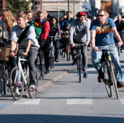

Mobilidade Ativa
Também denominada de mobilidade suave ou mobilidade não motorizada é uma forma de mobilidade para transporte de pessoas, e em alguns casos de bens, que faz uso unicamente de meios físicos do ser humano para a locomoção. Os meios de transporte ativos mais amplamente usados são andar a pé e de bicicleta. Todavia outros meios menos frequentes com propulsão humana como por exemplo, qualquer velocípede não motorizado, patins, skate ou trotinetas, também se enquadram dentro da mobilidade ativa.

Faz parte da mobilidade sustentável, sendo promovida predominantemente em meios urbanos e dentro de políticas públicas municipais, onde se dá uma maior ênfase à ocupação do espaço público para esplanadas, parques, jardins, logradouros, espaços pedonais mais amplos e espaço público descongestionado de tráfego rodoviário.

Havendo condições de segurança, em termos médios, dentro das opções de mobilidade de cada indivíduo, revela ser a mais barata, saudável e prática até uma distância de cerca de 5 km. Por fazer uso apenas da força física do ser humano, é também a energeticamente mais eficiente. As diversas formas e meios de transporte que fazem uso da mobilidade ativa, são denominados por modos ativos.
Políticas de mobilidade
Políticas públicas promotoras de mobilidade ativa, trazem benefícios na redução de gases poluentes e com efeito de estufa e ruído emitidos na locomoção de veículo motorizados; benefícios para a saúde pública, menor sinistralidade rodoviária, maior efeito de coesão comunitária nos bairros habitacionais e um impacto positivo na economia com a maior eficiência energética na área dos transportes e a redução de custos de mobilidade das famílias. Poderão ser enumeradas os pontos positivos de políticas públicas que promovam a mobilidade ativa.
Poluição do ar
Um dos grandes problemas que diversas grandes urbes enfrentam prende-se com a elevada taxa de gases poluentes na atmosfera (CO, NOx, SOx, vários hidrocarbonetos, e muitos outros), pois existe normalmente nas grandes cidades elevadas concentrações de veículos com motor de combustão interna. A adoção de medidas que desincentivem o uso do automóvel favorece uma melhoria significativa da qualidade do ar nas cidades.
Poluição sonora
Encorajar a mobilidade ativa favorece a diminuição da poluição sonora, pois
quer as bicicletas quer andar a pé, emitem um ruído significativamente inferior
ao produzido por veículos com motor de combustão.
Desocupação do espaço público
A mobilidade ativa, ao substituir viagens em automóvel, liberta o espaço
público, que pode ser ocupado por jardins, praças, ou mesmo espaços comerciais
como esplanadas.
Saúde pública
A mobilidade ativa, ao substituir viagens em automóvel, por modos ativos em que é exigido algum esforço físico ao utilizador, melhora substancialmente o bem-estar físico e a saúde das pessoas que a adotam. De referir que a título de exemplo, a maior causa de morte em Portugal são as doenças cardiovasculares, em que o exercício físico é um fator crucial na prevenção das mesmas.
Economia
Um grande número de países ocidentais são energeticamente deficitários, alocando muitos recursos financeiros para a importação de combustíveis fósseis, estando tal efeito, patente nas suas balanças comerciais. Outra grande parcela de países, como Portugal, não tem indústria automóvel de capital nacional, forçando a importação massiva de veículos motorizados. Os custos particulares do automóvel, têm valores, comparativamente aos rendimentos individuais, deveras elevados, podendo em alguns casos atingir metade destes, forçando o consumidor automobilista a alocar recursos financeiros para saciar as necessidades do automóvel, preterindo por exemplo a aquisição de produtos locais ou nacionais.